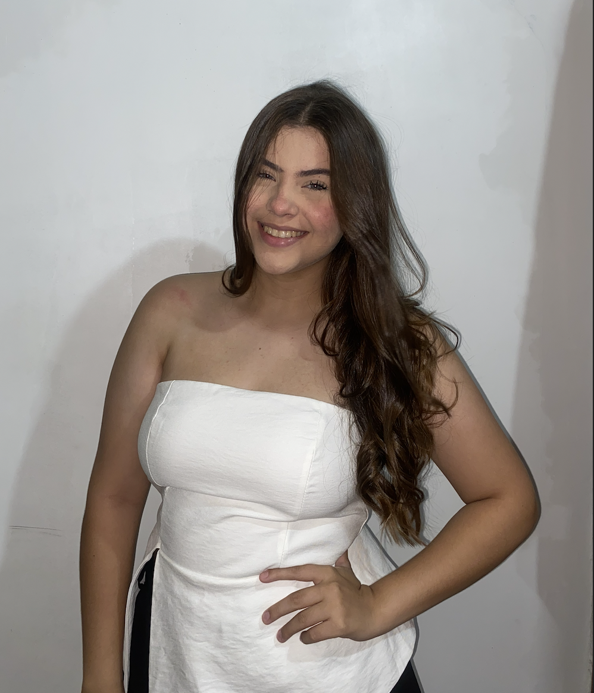

Bacharelado em Biomedicina
Curso de fev de 2026 a dez de 2030 na UNINORTE, focado em diagnóstico, pesquisa e práticas laboratoriais.
Portfólio de Biomedicina
Estudante de Biomedicina (1º período) na UNINORTE, com grande interesse em aprendizado contínuo e desenvolvimento profissional. Atualmente em busca da primeira oportunidade para colocar em prática conhecimentos acadêmicos.

Estudante de Biomedicina (1º período) na UNINORTE, focada em aprendizado contínuo, desenvolvimento profissional e aplicação prática de conhecimentos acadêmicos.
Meses de estudo
Período atual
Competências
Sou dedicada aos estudos, organizada, responsável e comprometida com meu crescimento pessoal e profissional. Tenho interesse em áreas relacionadas à saúde, atendimento ao público e rotinas administrativas.
Quem sou
Estudante de Biomedicina (1º período) na UNINORTE, com grande interesse em aprendizado contínuo e desenvolvimento profissional. Atualmente em busca da primeira oportunidade para colocar em prática conhecimentos acadêmicos e desenvolver habilidades no ambiente de trabalho.
Um portfolio que combina ciência, estética e profissionalismo para a área biomédica.
Formação
Curso de fev de 2026 a dez de 2030 na UNINORTE, focado em diagnóstico, pesquisa e práticas laboratoriais.
Atenção a detalhes, aprendizado rápido, organização, responsabilidade e interesse em saúde e atendimento ao público.
Buscar primeira oportunidade para aplicar conhecimentos acadêmicos e contribuir positivamente com a equipe.
Projetos
Estudo de microrganismos e análise de amostras com técnicas laboratoriais cuidadosas.
MicrobiologiaApresentação de resultados acadêmicos com foco em clareza e impacto para públicos diversos.
ApresentaçãoResolução de estudos clínicos para aprimorar o raciocínio e a tomada de decisão em laboratório.
Estudos clínicosVamos nos conectar
Estou aberta a projetos acadêmicos, parcerias e oportunidades que valorizem a ciência e a experiência humana.